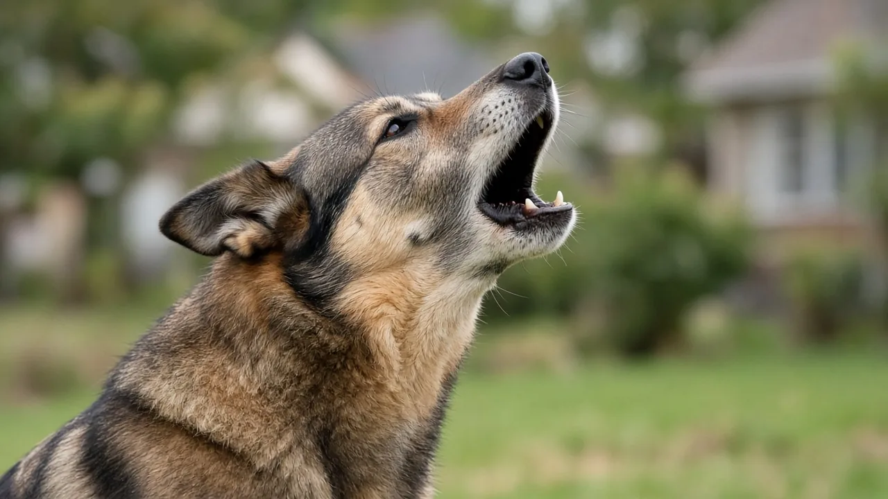

Why do dogs howl at sirens?
Dogs howl at sirens because their natural communication instincts may be triggered by the loud, sustained, changing tones. Sirens share some acoustic characteristics with canine howls, potentially encouraging dogs to respond vocally. However, scientists have not proven that dogs mistake sirens for other animals. Some dogs may howl from excitement, curiosity or sensitivity to unusual sounds. Howling alone does not mean a dog is frightened or experiencing pain.

Why sirens trigger a dog's howling instinct
Howling is a natural canine behaviour with roots in the communication systems of wild canids.
Wolves howl to communicate across distances, maintain contact and help manage territorial interactions. Harrington and Mech (1979) investigated how wolves responded to simulated howls and demonstrated the importance of vocal communication in territorial behaviour.
Domestic dogs retain the ability to howl, although their social environments and communication patterns differ from those of wolves. That shared vocal toolkit sits alongside other dog behaviour patterns owners notice day to day.
Emergency sirens often produce prolonged tones that rise and fall in pitch. These characteristics resemble certain features of animal vocalisations. Kořanová and colleagues (2021) proposed that emergency sirens and wolf howls show acoustic overlap, and that this resemblance can help explain why sirens sometimes provoke howling. Their paper frames the idea as a hypothesis of natural and technical signal convergence, not a finished proof for every dog.
One plausible explanation is that dogs respond to these sounds through an inherited vocal communication mechanism. The American Kennel Club similarly describes sustained sounds as potential triggers for howling.
Direct experimental evidence establishing precisely why dogs howl at sirens remains limited. Acoustic resemblance offers a reasonable hypothesis, not a confirmed explanation for every dog.

Do dogs think sirens are other dogs?
Possibly, but there is no reliable evidence that dogs consistently interpret sirens as other dogs howling.
A siren might activate a vocal response without the dog actually believing another animal is present.
Dogs can also howl for reasons unrelated to communicating with other dogs, including seeking attention or expressing emotional arousal.
Research by Pongrácz and colleagues (2005) found that human listeners could distinguish different contexts from recorded dog barks. This suggests canine vocalisations can convey meaningful information.
However, that study examined barking, not howling at sirens. Its findings cannot establish what dogs perceive when hearing emergency vehicles.
The distinction matters: a dog's response to a sound does not necessarily reveal what the dog thinks produced it.
Do sirens hurt dogs' ears?
Not necessarily. A dog howling at a siren is not proof that the sound hurts.
Dogs have sensitive hearing, including the ability to detect higher frequencies than humans. Barber and colleagues (2020) summarise typical hearing ranges of about 65 Hz to about 45 kHz in dogs, compared with roughly 20 Hz to 20 kHz in humans. Hearing range alone does not establish whether a particular sound causes discomfort.
Noise intensity, exposure duration and distance from the source all matter.
A siren heard several streets away is different from one operating immediately beside a dog.
Very loud sounds can potentially cause discomfort or harm, so owners should avoid deliberately exposing dogs to intense noise.
Nevertheless, many dogs howl without showing any indication of distress.
If your dog howls briefly and immediately returns to normal activities, the behaviour is generally less concerning than howling accompanied by panic or persistent agitation.
How to tell whether your dog is distressed
Observe your dog's entire body rather than interpreting the howl in isolation.
A relaxed dog might lift its head, howl several times and settle down again.
A frightened dog may display additional behaviours.
According to AKC guidance on canine stress, warning signs can include:
- Trembling, pacing or restlessness
- A tucked tail or lowered posture
- Excessive panting unrelated to heat or exercise (see also why dogs pant)
- Lip licking, yawning or avoiding eye contact
- Attempts to hide or escape
These signs require interpretation in context. Panting and yawning, for example, can occur for reasons unrelated to anxiety. More on reading stress signals is in our behaviour guide.
Pay attention to how quickly your dog recovers after the siren disappears.
A dog that remains fearful long afterward may need additional support.
Why do some dogs howl while others stay quiet?
Individual differences are normal.
Breed background, temperament, learning history and previous exposure to sounds may influence how frequently a dog howls.
Some dogs are naturally more vocal, while others rarely howl at all.
The AKC explains that howling serves several possible communication functions and that dogs vary in their vocal behaviour.
A dog that ignores sirens is not necessarily hearing impaired. Similarly, a dog that howls frequently is not automatically anxious.
There is insufficient evidence to identify one universal reason why certain dogs respond strongly to emergency sirens.
What should you do when your dog howls?
If your dog appears comfortable, occasional howling generally requires no intervention.
If the behaviour becomes disruptive or appears associated with fear, try these humane approaches:
- Reduce noise exposure. Close windows or offer access to a quieter room.
- Provide a safe retreat. Allow your dog to choose a familiar, comfortable resting place.
- Reward calm responses. Offer treats or praise when your dog remains relaxed around distant sounds.
- Avoid punishment. Shouting or startling your dog may increase fear.
- Consider gradual training. Carefully controlled desensitisation and counterconditioning may help dogs with noise sensitivity (see reward based training).
Never force a frightened dog to endure loud siren recordings.
If anxiety is substantial, seek guidance from a veterinarian or qualified reward based behaviour professional.
When should you consult a veterinarian?
Occasional siren howling is usually normal.
However, veterinary assessment is appropriate when howling begins suddenly, becomes persistent or accompanies other concerning symptoms.
Watch for unexplained vocalisation, suspected pain, hearing changes, disorientation, severe panic or attempts to escape.
A veterinarian can investigate medical contributors and recommend behavioural support when needed. Start with our health basics if you are unsure what to watch for.
The goal is not necessarily to stop all howling, but to ensure your dog remains comfortable and safe.
Frequently asked questions
Why does my dog howl at ambulances but not police sirens?
Different sirens produce different acoustic patterns. Your dog may respond more strongly to particular pitches or sound sequences. Previous experiences may also influence the reaction.
Are dogs howling at sirens because they are scared?
Not always. Some dogs howl while appearing relaxed. Fear is more likely when howling accompanies trembling, hiding, pacing or other stress signals.
Should I howl along with my dog?
You can interact vocally if your dog appears comfortable, although doing so may encourage further howling. Avoid stimulating a dog that already seems frightened.
Can dogs be trained not to howl at sirens?
Training may reduce howling through positive reinforcement and gradual sound exposure. Results vary, and punishment is not recommended.
Why has my dog suddenly started howling at sirens?
Changes in experience, environment or sound sensitivity may contribute. If the change is abrupt or accompanied by other unusual behaviour, consult your veterinarian.
Sources
- Harrington FH, Mech LD (1979). Wolf Howling and Its Role in Territory Maintenance. Behaviour 68(3-4): 207-249. DOI 10.1163/156853979X00322, Behaviour
- Kořanová D, Němcová L, Policht R, Hart V, Begall S, Burda H (2021). Wolf Howling and Emergency Sirens: A Hypothesis of Natural and Technical Convergence of Aposematic Signals. Acta Biotheoretica 69(1): 53-65. DOI 10.1007/s10441-020-09389-6, Acta Biotheoretica
- Pongrácz P, Molnár C, Miklósi Á, Csányi V (2005). Human Listeners Are Able to Classify Dog (Canis familiaris) Barks Recorded in Different Situations. Journal of Comparative Psychology 119(2): 136-144. DOI 10.1037/0735-7036.119.2.136, Journal of Comparative Psychology
- Barber ALA, Wilkinson A, Montealegre-Z F, Ratcliffe VF, Guo K, Mills DS (2020). A comparison of hearing and auditory functioning between dogs and humans. Comparative Cognition & Behavior Reviews 15: 45-94. DOI 10.3819/ccbr.2020.150007, Comparative Cognition & Behavior Reviews
- Why Do Dogs Howl?, American Kennel Club
- How Can You Tell if Your Dog Is Stressed?, American Kennel Club
General education only, not veterinary advice. If you are worried about your dog, contact your vet; in an emergency, contact an emergency vet straight away.